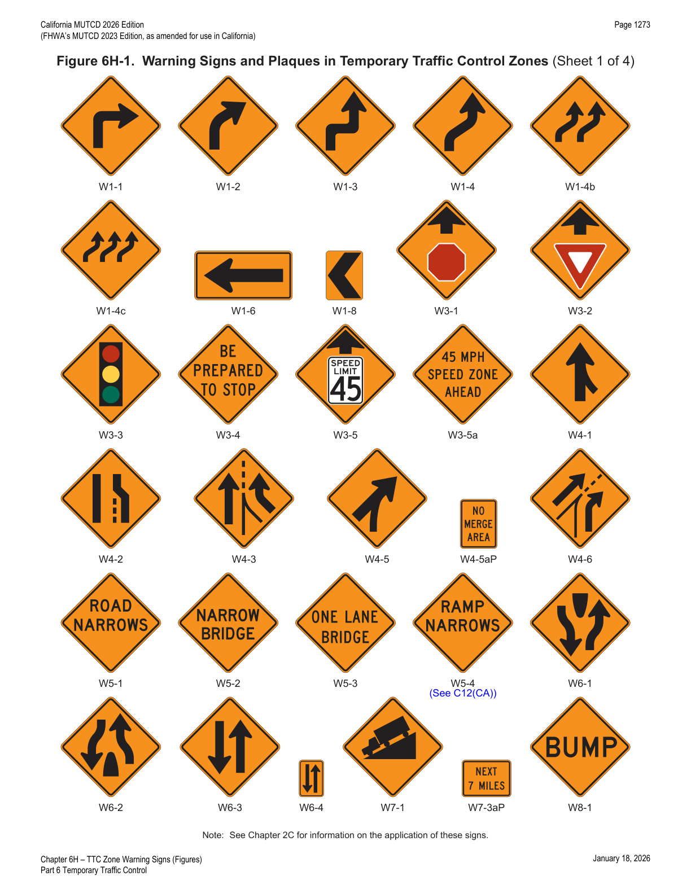
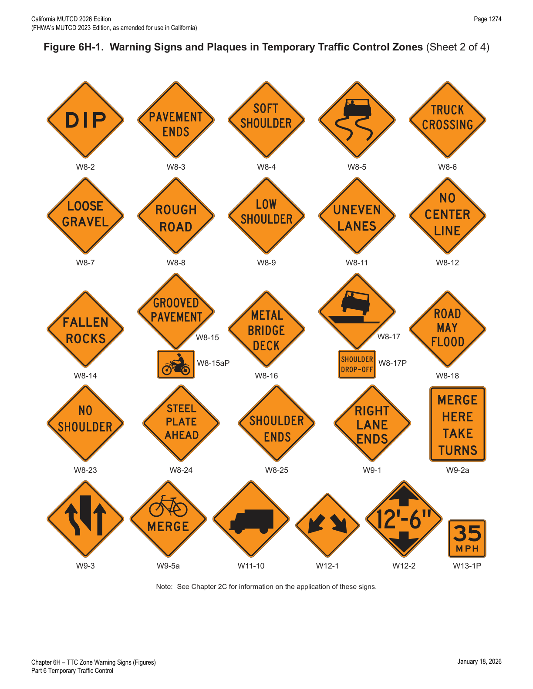
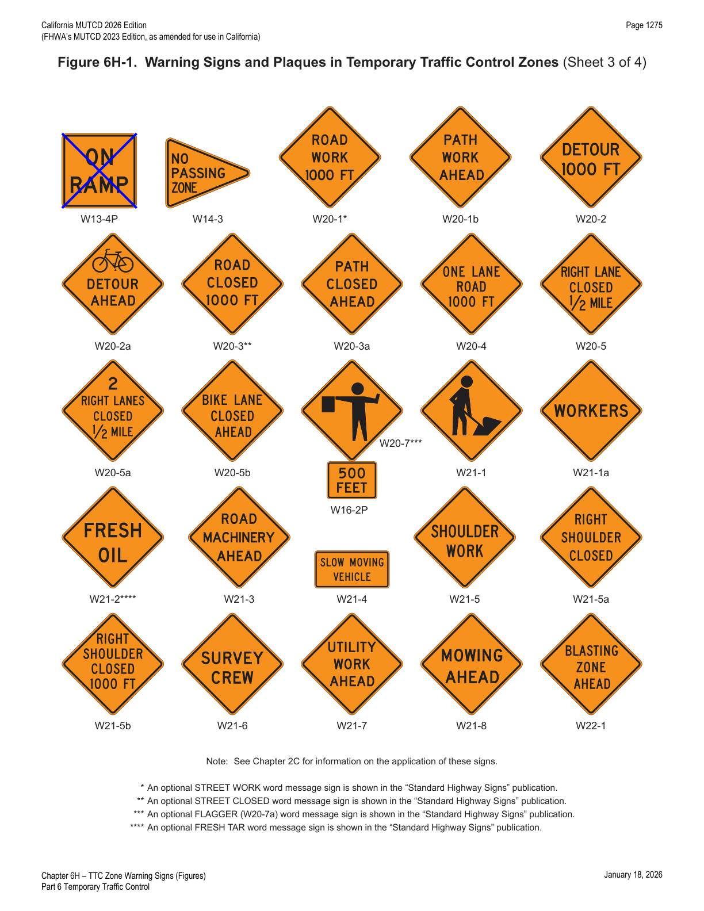
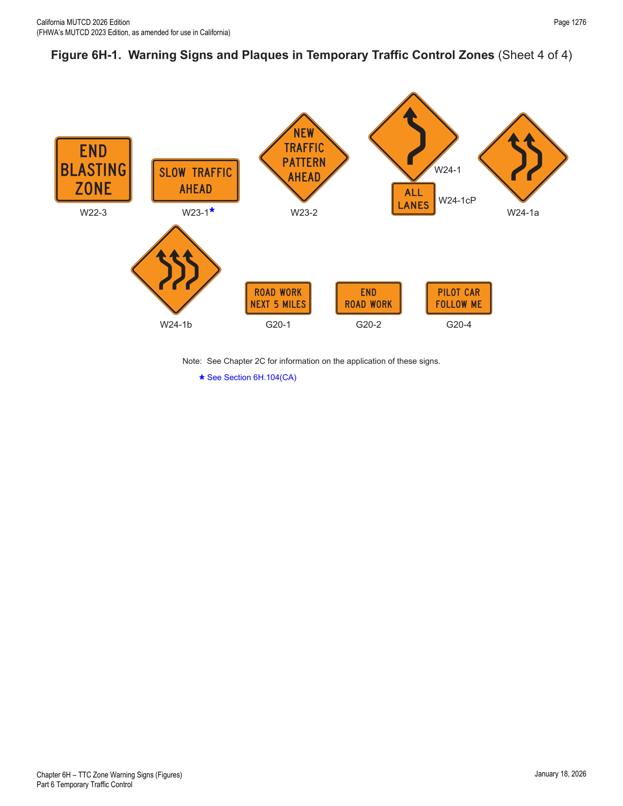
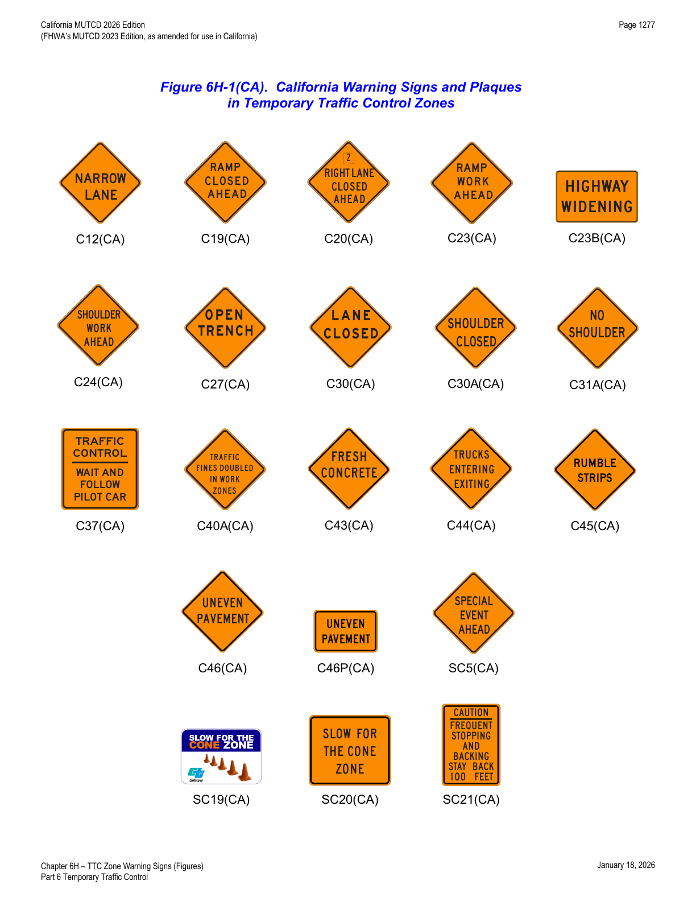
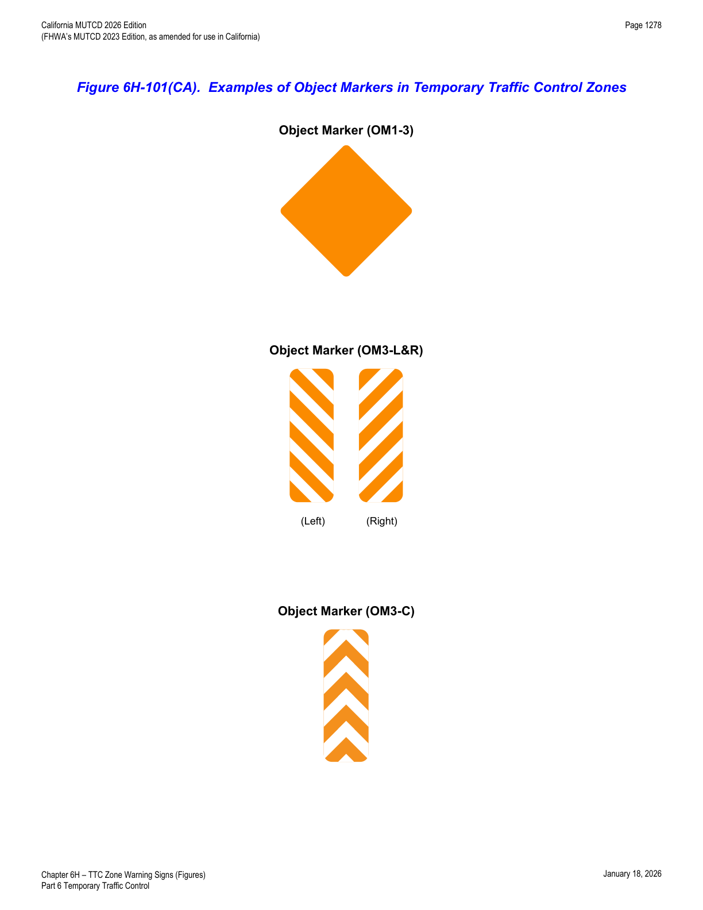

Part 6 · Temporary Traffic Control · Chapter 6H
TTC Zone Warning Signs
The complete warning-sign toolkit for TTC zones — general function/design/application rules, advance-warning sign placement, and every individual warning sign and plaque series (road/lane condition, geometry, shoulder, blasting, surface, and pilot-car signs) plus California-specific additions, with full size tables.
6H.01Warning Sign Function, Design, and Application
- 01TTC zone warning signs (see Figure 6H-1) notify road users of specific situations or conditions on or adjacent to a roadway that might not otherwise be apparent.
- 02TTC warning signs shall comply with the Standards for warning signs presented in Part 2 and in FHWA's "Standard Highway Signs" publication (see Section 1A.05).
- 03The sizes for TTC warning signs shall be as shown in Table 6H-1.
- 04Except as provided in Paragraph 5 of this Section, TTC warning signs shall be diamond-shaped with a black legend and border on an orange (or fluorescent orange) background, except for the Grade Crossing Advance Warning (W10-1) sign, which shall have a black legend and border on a yellow (or fluorescent yellow) background.
- 05Warning signs that are required or recommended in Parts 2 or 7 to have a fluorescent yellow-green background may have that color background in TTC zones.
- 06Existing warning signs with a yellow background that are still applicable may remain in place.
- 07Warning signs used for TTC incident management situations may have a black legend and border on a fluorescent pink background.
- 08Mounting or space considerations may justify a change from the standard diamond shape to a rectangular shape.
- 09In emergencies, available warning signs having yellow backgrounds may be used if signs with orange or fluorescent pink backgrounds are not at hand.
- 10Where roadway or road user conditions require greater emphasis, larger than standard size warning signs should be used, with the symbol or legend enlarged approximately in proportion to the outside dimensions.
- 11Where any part of the roadway is obstructed or closed by work activities or incidents, advance warning signs should be installed to alert road users well in advance of these obstructions or restrictions.
- 12Where road users include pedestrians, the provision of supplemental audible information or detectable barriers or barricades should be provided for people with vision disabilities.
- 13Detectable barriers or barricades communicate very clearly to pedestrians who have vision disabilities that they can no longer proceed in the direction that they are traveling.
- 14Advance warning signs may be used singly or in combination.
- 15Where distances are not displayed on warning signs as part of the message, a supplemental plaque with the distance legend may be mounted immediately below the sign on the same support.
- 16The NO SHOULDER (W8-23) sign (see Figure 6H-1) may be used where no earth, gravel, or paved shoulders are available for vehicles to pull off the roadway.
- 17Some of the California warning signs used in TTC zones are shown in Figure 6H-1(CA) and Table 6H-1(CA).
6H.02Position of Advance Warning Signs
- 01Where highway conditions permit, warning signs should be placed in advance of the transition and activity areas at varying distances depending on roadway type, condition, and posted speed. Table 6B-1 contains information regarding the spacing of advance warning signs. Where a series of two or more advance warning signs is used, the closest sign to the transition and activity areas should be placed approximately 100 feet for low-speed urban streets to 1,000 feet or more for freeways and expressways.
- 02Where multiple advance warning signs are needed on the approach to a transition and activity area, the ROAD WORK AHEAD (W20-1) sign should be the first advance warning sign encountered by road users.
- 03Various conditions, such as limited sight distance or obstructions that might require a driver to reduce speed or stop, might require additional advance warning signs.
- 04As an alternative to a specific distance on advance warning signs, the word AHEAD may be used.
- 05At TTC zones on lightly-traveled roads, all of the advance warning signs prescribed for major construction might not be needed.
- 06Utility work, maintenance, or minor construction can occur within the TTC zone limits of a major construction project, and additional warning signs may be needed.
- 07Utility, maintenance, and minor construction signing and TTC should be coordinated with appropriate authorities so that road users are not confused or misled by the additional TTC devices.
6H.03ROAD (STREET) WORK Sign (W20-1)
- 01The ROAD (STREET) WORK (W20-1) sign (see Figure 6H-1), which serves as a general warning of obstructions or restrictions, should be located in advance of the work space or any detour, on the road where the work is taking place.
- 02Where traffic can enter a TTC zone from a crossroad or a major (high-volume) driveway, an advance warning sign should be used on the crossroad or major driveway.
- 03The legend STREET may be substituted for ROAD and the distance legend may be either XX FEET, XX MILES, or AHEAD.
- 04The RAMP WORK AHEAD (C23(CA)) sign (see Figure 6H-1(CA)) may be substituted for the W20-1 sign where applicable.
- 05The ROAD (STREET) WORK Informational plaque (C23B(CA)) (refer to Figure 6H-1(CA)) may be used with the ROAD (STREET) WORK (W20-1) sign.
- 06The message displayed on the ROAD (STREET) WORK Informational plaque (C23B(CA)) shall be worded in terms common to motorists, as shown in the examples below. The height and width of the plate will vary according to the lettering size and message. The width of the plate shall not exceed the overall width of the W20-1 sign.
07 Following are some example messages:
- BRIDGE REPLACEMENT
- BRIDGE WIDENING
- BRIDGE REPAIR
- CURVE IMPROVEMENT
- HIGHWAY REALIGNMENT
- HIGHWAY WIDENING
- HIGHWAY WIDENING AND PAVING
- HIGHWAY REHABILITATION
- STORM REPAIR
- PAVING
- SIGNING IMPROVEMENT
- PAVEMENT MAINTENANCE
- SAFETY IMPROVEMENT
- 08The SPECIAL EVENT AHEAD (SC5(CA)) sign (refer to Figure 6H-1(CA)) should be used in lieu of the ROAD (STREET) WORK (W20-1) sign for special events, such as bike races, movie filming, etc., where the event is on the travel way or close enough or of such a nature as to have a potential effect on motorists, bicyclists, and pedestrians.
6H.04DETOUR Sign (W20-2)
- 01The DETOUR (W20-2) sign (see Figure 6H-1) shall be used in advance of a road user detour over a different roadway or route. Refer to CVC § 21363 for detour signs.
- 01The distance legend may be either XX FEET, XX MILES, or AHEAD.
6H.05ROAD (STREET) CLOSED Sign (W20-3)
- 01The ROAD (STREET) CLOSED (W20-3) sign (see Figure 6H-1) should be used in advance of the point where a highway is closed to all road users, or to all but local road users.
- 02The legend STREET may be substituted for ROAD and the distance legend may be either XX FEET, XX MILES, or AHEAD.
6H.06ONE LANE ROAD Sign (W20-4)
- 01The ONE LANE ROAD (W20-4) sign (see Figure 6H-1) shall be used only in advance of that point where motor vehicle traffic in both directions must use a common single lane (see Section 6E.01).
- 02The distance legend may be either XX FEET, XX MILES, or AHEAD.
6H.07Lane(s) Closed Signs (W20-5, W20-5a, and W9-3)
- 01The Lane(s) Closed sign (see Figure 6H-1) shall be used in advance of that point where one or more through lanes of a multi-lane roadway are closed.
- 02For a single lane closure, the Lane Closed (W20-5) sign (see Figure 6H-1) shall use the legend RIGHT (LEFT) LANE CLOSED. Where two or more adjacent lanes are closed, the W20-5a sign (see Figure 6H-1) shall use the legend XX RIGHT (LEFT) LANES CLOSED.
- 02aThe Lane Closed or LANE(S) CLOSED (W20-5, W20-5a, or C20(CA)) sign by itself, or in combination with a LEFT (C20A(CA)) sign overlay and/or Numeral (C20B(CA)) sign overlay, may be used (refer to Figures 6H-1, 6H-1(CA), and 6I-1(CA)).
- 02bThe LANE CLOSED (C30(CA)) sign (refer to Figure 6H-1(CA)) may be used within a closed lane of a multilane highway as follow-up information to the appropriate advance warning signs. The C30(CA) sign may be repeated at intervals, throughout long lane closures, as a reminder to motorists.
- 03The distance legend may be either XX FEET, XX MILES, or AHEAD.
- 04The Interior Lane Shift (W9-3) sign (see Figure 6H-1) should be used in advance of that point where work occupies an interior lane(s) and approaching motor vehicle traffic is directed to the right or left of the work zone in the lane(s) by using a shifting taper to route traffic around the closed interior lane(s).
- 05For moving lane closures on State highways, see Caltrans' Standard Plan T-16. Refer to Section 1A.05 for information regarding this publication.
- 06Do not use the CENTER LANE CLOSED AHEAD (W9-3) sign (refer to Figure 6H-1) for moving lane closures on State highways.
6H.08Lane Ends Signs (W4-2 and W9-2a)
- 01The Lane Ends (W4-2) sign (see Figure 6H-1) should be used to warn drivers of the reduction in the number of lanes for moving motor vehicle traffic in the direction of travel on a multi-lane roadway.
- 02The MERGE HERE TAKE TURNS (W9-2a) sign (see Figure 6H-1) should be used to identify the merge point at which vehicles from alternate lanes take turns merging during Late Merge applications (see Section 6N.19).
6H.09ON RAMP Plaque (W13-4P)
- 01When work is being done on a ramp, but the ramp remains open, the ON RAMP (W13-4P) plaque (see Figure 6H-1) should be used to supplement the advance ROAD WORK sign.
- 02The ON RAMP (W13-4) plaque shall not be used in California due to the potential for conflict if it is used when the work is being done on an off ramp.
In practice, this is a notable California deviation worth flagging: although the national MUTCD illustrates an ON RAMP plaque, California prohibits its use entirely because of the ambiguity risk with off-ramp work — do not specify W13-4P on California projects.
6H.10RAMP NARROWS Sign (W5-4)
- 01The RAMP NARROWS (W5-4) sign (see Figure 6H-1) should be used in advance of the point where work on a ramp reduces the normal width of the ramp along a part or all of the ramp.
- 02The ROAD NARROWS (W5-1) sign (refer to Figure 6H-1) or NARROW LANE(S) (C12(CA)) sign (refer to Figure 6H-1(CA)), as appropriate, may be used instead of the RAMP NARROWS (W5-4) sign. Refer to Sections 2C.17 and 6H.102(CA).
6H.11SLOW TRAFFIC AHEAD Sign (W23-1)
- 01The SLOW TRAFFIC AHEAD (W23-1) sign (see Figure 6H-1) may be used on a shadow vehicle, usually mounted on the rear of the most upstream shadow vehicle, along with other appropriate signs for mobile operations to warn of slow moving work vehicles. A ROAD (STREET) WORK (W20-1) sign may also be used with the SLOW TRAFFIC AHEAD sign.
6H.12EXIT OPEN and EXIT CLOSED Signs (E5-2 and E5-2a)
- 01An EXIT OPEN (E5-2) or EXIT CLOSED (E5-2a) sign (see Figure 6H-1) may be used to supplement other warning signs where work is being conducted in the vicinity of an exit ramp and where the exit maneuver for vehicular traffic using the ramp is different from the normal condition.
- 02Refer to FHWA's List of Known Errors for an error in Paragraph 1. Refer to Section 1A.04 for more details.
6H.13EXIT ONLY Sign (E5-3)
- 01An EXIT ONLY (E5-3) sign (see Figure 6H-1) may be used to supplement other warning signs where work is being conducted in the vicinity of an exit ramp and where the exit maneuver for vehicular traffic using the ramp is different from the normal condition.
6H.14NEW TRAFFIC PATTERN AHEAD Sign (W23-2)
- 01A NEW TRAFFIC PATTERN AHEAD (W23-2) sign (see Figure 6H-1) may be used on the approach to an intersection or along a section of roadway to provide advance warning of a change in traffic patterns, such as revised lane usage, roadway geometry, or signal phasing.
- 02To retain its effectiveness, the W23-2 sign should be displayed for up to 2 weeks, and then it should be covered or removed until it is needed again.
6H.15Flagger Signs (W20-7 and W20-7a)
- 01The Flagger (W20-7) sign (see Figure 6H-1) should be used in advance of any point where a flagger is stationed to control road users.
- 02A distance legend may be displayed on a supplemental plaque below the Flagger sign. The sign may be used with appropriate legends or in conjunction with other warning signs, such as the BE PREPARED TO STOP (W3-4) sign (see Figure 6H-1).
- 03The FLAGGER (W20-7a) word message sign with a distance legend may be substituted for the Flagger (W20-7) sign.
6H.16Two-Way Traffic Sign (W6-3)
- 01When one roadway of a normally-divided highway is closed, with two-way vehicular traffic maintained on the other roadway, the Two-Way Traffic (W6-3) sign (see Figure 6H-1) should be used at the beginning of the two-way vehicular traffic section and at intervals to remind road users of opposing vehicular traffic.
- 02The Two-Way Traffic (W6-3) sign should also be used at locations where motorists could perceive that they are on a one-way roadway when, in fact, they are on a two-lane, two-way highway.
03 Following are some typical situations:
- Construction sites where a two-lane highway is being converted to a freeway or an expressway.
- Two-lane, two-way highways where ultimate freeway or expressway right-of-way has been purchased and grading for the full width has been completed.
- Two-lane, two-way highways following long sections of multi-lane freeway or expressway.
- Lane-shift as shown in Figure 6P-102(CA).
6H.17Narrow Two-Way Traffic Sign (W6-4)
- 01The Narrow Two-Way Traffic (W6-4) sign (see Figure 6H-1) shall be an upright, retroreflective orange-colored sign placed on a flexible support and sized at least 12 inches wide by 18 inches high.
- 02The Narrow Two-Way Traffic (W6-4) sign is intended for mounting only on a flexible support in a series along the center line to separate opposing vehicular traffic on a two-lane, two-way operation.
- 03Narrow Two-Way Traffic signs shall not be placed within pedestrian crossings.
6H.18Workers Signs (W21-1 and W21-1a)
- 01A Workers (W21-1) sign (see Figure 6H-1) may be used to alert road users of workers in or near the roadway.
- 02In the absence of other warning devices, a Workers sign should be used when workers are in the roadway.
- 03The WORKERS (W21-1a) word message sign may be used as an alternate to the Workers (W21-1) symbol sign.
6H.19FRESH OIL (TAR) Sign (W21-2)
- 01The FRESH OIL (TAR) (W21-2) sign (see Figure 6H-1) should be used to warn road users of the surface treatment.
6H.20ROAD MACHINERY AHEAD Sign (W21-3)
- 01The ROAD MACHINERY AHEAD (W21-3) sign (see Figure 6H-1) may be used to warn of machinery operating in or adjacent to the roadway.
6H.21Motorized Traffic Signs (W8-6 and W11-10)
- 01Motorized Traffic (W8-6 and W11-10 or C44(CA)) signs (refer to Figure 6H-1 and Figure 6H-1(CA)) may be used to alert road users to locations where unexpected travel on the roadway or entries into or departures from the roadway by construction vehicles might occur. The TRUCK CROSSING (W8-6) or TRUCKS ENTERING EXITING (C44(CA)) word message sign may be used as an alternate to the Truck (W11-10) symbol sign (see Figure 6H-1) where there is an established construction vehicle crossing, entrance, or exit of the roadway.
- 02These locations might be relatively confined or might occur randomly over a segment of roadway.
6H.22Shoulder Work Signs (W21-5, W21-5a, and W21-5b)
- 01Shoulder Work signs (see Figure 6H-1 and Figure 6H-1(CA)) warn of maintenance, reconstruction, or utility operations on the highway shoulder where the roadway is unobstructed.
- 02The Shoulder Work sign shall have the legend SHOULDER WORK (W21-5), RIGHT (LEFT) SHOULDER CLOSED (W21-5a), or RIGHT (LEFT) SHOULDER CLOSED XX FT or AHEAD (W21-5b), or SHOULDER WORK AHEAD (C24(CA)), or SHOULDER CLOSED (C30A(CA)).
- 03The Shoulder Work sign may be used in advance of the point on a non-limited access highway where there is shoulder work. It may be used singly or in combination with a ROAD WORK NEXT XX MILES or ROAD WORK AHEAD sign.
- 04On freeways and expressways, the RIGHT (LEFT) SHOULDER CLOSED XX FT or AHEAD (W21-5b) sign followed by RIGHT (LEFT) SHOULDER CLOSED (W21-5a) sign should be used in advance of the point where the shoulder work occurs and should be preceded by a ROAD WORK AHEAD sign.
- 05The SHOULDER WORK AHEAD (C24(CA)) sign may be used in advance of the point where shoulder work or utility operations involve the shoulder but the roadway is unobstructed.
- 06The SHOULDER CLOSED (C30A(CA)) sign may be used within a shoulder area that has been closed due to work near the traveled way. The C30A(CA) sign is supplemental to appropriate advance warning signs.
6H.23SURVEY CREW Sign (W21-6)
- 01The SURVEY CREW (W21-6) sign (see Figure 6H-1) should be used to warn of surveying crews working in or adjacent to the roadway.
6H.24UTILITY WORK Sign (W21-7)
- 01The UTILITY WORK (W21-7) sign (see Figure 6H-1) may be used as an alternate to the ROAD (STREET) WORK (W20-1) sign for utility operations on or adjacent to a highway.
- 02Typical examples of where the UTILITY WORK sign is used appear in Figures 6P-4, 6P-6, 6P-10, 6P-15, 6P-18, 6P-21, 6P-22, 6P-26, and 6P-33.
- 03The distance legend may be either XX FEET, XX MILES, or AHEAD.
6H.25Signs for Blasting Areas
- 01Radio-Frequency (RF) energy can cause the premature firing of electric detonators (blasting caps) used in TTC zones.
- 02Road users shall be warned where blasting operations occur. A sequence of signs shall be prominently displayed to warn all road users of blasting operations and to direct operators of mobile radio equipment, including cellular telephones, to turn off transmitters in a blasting area. These signs shall be covered or removed when there are no explosives in the area or the area is otherwise secured.
- 03The BLASTING ZONE AHEAD (W22-1) sign (see Figure 6H-1) shall be used in advance of any TTC zone where explosives are being used. The TURN OFF 2-WAY RADIO AND CELL PHONE (R22-2) and END BLASTING ZONE (W22-3) signs shall be used in sequence with this sign.
- 04The TURN OFF 2-WAY RADIO AND CELL PHONE (R22-2) sign (see Section 6G.11 and Figure 6G-1) shall follow the BLASTING ZONE AHEAD (W22-1) sign and shall be placed at least 1,000 feet before the beginning of the blasting zone.
- 05The END BLASTING ZONE (W22-3) sign (see Figure 6H-1) shall be placed a minimum of 1,000 feet past the blasting zone.
- 06The END BLASTING ZONE sign may be placed either with or preceding the END ROAD WORK sign.
In practice, the blasting sequence is fixed and non-negotiable: BLASTING ZONE AHEAD, then TURN OFF 2-WAY RADIO AND CELL PHONE (at least 1,000 ft before the blasting zone begins), then END BLASTING ZONE (at least 1,000 ft past it) — all removed the moment no explosives remain in the area.
6H.26Shoulder Signs and Plaque (W8-4, W8-9, W8-17, and W8-17P)
- 01The SOFT SHOULDER (W8-4) sign (see Figure 6H-1) may be used to warn of a soft shoulder condition.
- 02The LOW SHOULDER (W8-9) sign (see Figure 6H-1) may be used to warn of a shoulder condition where there is an elevation difference of 3 inches or less between the shoulder and the travel lane.
- 03The Shoulder Drop Off (W8-17) sign (see Figure 6H-1) should be used when an unprotected shoulder drop-off, adjacent to the travel lane, exceeds 3 inches in depth for a continuous length along the roadway, based on engineering judgment.
- 04A SHOULDER DROP-OFF (W8-17P) supplemental plaque (see Figure 6H-1) may be mounted below the W8-17 sign.
- 05The black-on-orange-background LOW SHOULDER (W8-9) sign (refer to Figure 6H-1) may be used on State highways to warn of a shoulder condition where there is an elevation difference of less than 3 inches between the shoulder and the travel lane.
6H.27UNEVEN LANES Sign (W8-11)
- 01The UNEVEN LANES (W8-11) sign (see Figure 6H-1) should be used during operations that create a difference in elevation between adjacent lanes that are open to travel.
- 02The UNEVEN PAVEMENT (C46(CA)) sign (refer to Figure 6H-1(CA)) should be used during operations that create a difference in elevation in the pavement that is not along a lane line.
- 03Uneven pavement conditions include elevation difference adjacent to lanes but not at the lane line; between a vehicle lane and a bicycle lane or an unmarked shoulder; and a step in any direction in the pavement. A step is defined as a ridge in the pavement, such as that which might exist between the pavement and a concrete gutter or manhole cover, or that might exist between two pavement blankets when the top level does not extend to the edge of the roadway.
- 04In situations where there is a need to warn bicyclists or other road users of the uneven pavement condition, the UNEVEN PAVEMENT (C46P(CA)) plaque (refer to Figure 6H-1(CA)) may be used.
- 05A C46P(CA) plaque shall not be used alone. If a C46P(CA) plaque is used, it shall be mounted below either a Vehicular Traffic Warning sign (refer to Section 2C.54) or a Non-Vehicular Warning sign (refer to Section 2C.55). The background color of the C46P(CA) plaque shall match the background color of the warning sign with which it is displayed.
- 06When warning is intended to be directed primarily to motorcyclists, use of the UNEVEN LANES (W8-11) sign or UNEVEN PAVEMENT (C46(CA)) sign with motorcycle plaque (W8-15aP) (refer to Figure 6H-1 and Figure 6H-1(CA)) may be considered.
- 07Refer to Table 6H-101(CA) for pavement surface tolerances for each road user group.
6H.28STEEL PLATE AHEAD Sign (W8-24)
- 01A STEEL PLATE AHEAD (W8-24) sign (see Figure 6H-1) may be used to warn road users that the presence of a temporary steel plate(s) might make the road surface uneven and might create slippery conditions during wet weather.
6H.29NO CENTER LINE Sign (W8-12)
- 01The NO CENTER LINE (W8-12) sign (see Figure 6H-1) should be used when the work obliterates the center line pavement markings and when temporary pavement centerline markings are not provided. This sign should be placed at the beginning of the TTC zone and repeated at 2-mile intervals in long TTC zones.
- 02Section 6J.02 contains information regarding temporary markings.
- 03The NO CENTER LINE (W8-12) sign shall not be used on State highways. Whenever construction or maintenance work causes obliteration of center stripe, temporary or permanent center stripe shall be in place prior to opening the State highway to public traffic.
In practice, this is another California-specific prohibition: the W8-12 NO CENTER LINE sign is a national-MUTCD option but is barred on State highways in California — Caltrans projects must restripe (temporary or permanent) before reopening rather than sign around the missing centerline.
6H.30Reverse Curve Signs (W1-4 Series)
- 01In order to give road users advance notice of a lane shift, a Reverse Curve (W1-4, W1-4b, or W1-4c) sign (see Figure 6H-1) should be used when a lane (or lanes) is being shifted to the left or right. If the design speed of the curves is 30 mph or less, a Reverse Turn (W1-3) sign should be used.
- 02If a Reverse Curve (or Turn) sign is used, the direction of the reverse curve (or turn) shall be appropriately illustrated. Except as provided in Paragraph 3 of this Section, the number of lanes illustrated on the sign shall be the same as the number of through lanes available to road users.
- 03Where two or more lanes are being shifted, a W1-4 (or W1-3) sign with an ALL LANES (W24-1cP) plaque (see Figure 6H-1) may be used instead of a sign that illustrates the number of lanes.
- 04Where more than three lanes are being shifted, the Reverse Curve (or Turn) sign may be rectangular.
6H.31Double Reverse Curve Signs (W24-1 Series)
- 01The Double Reverse Curve (W24-1, W24-1a, or W24-1b) sign (see Figure 6H-1) may be used where the tangent distance between two reverse curves is less than 600 feet, thus making it difficult for a second Reverse Curve (W1-4 series) sign to be placed between the curves. If the design speed of the curves is 30 mph or less, Double Reverse Turn signs may be used.
- 02If a Double Reverse Curve (or Turn) sign is used, the direction of the double reverse curve (or turn) shall be appropriately illustrated. Except as provided in Paragraph 3 of this Section, the number of lanes illustrated on the sign shall be the same as the number of through lanes available to road users.
- 03Where two or more lanes are being shifted, a W24-1 (or Double Reverse Turn sign showing one lane) sign with an ALL LANES (W24-1cP) plaque (see Figure 6H-1) may be used instead of a sign that illustrates the number of lanes.
- 04Where more than three lanes are being shifted, the Double Reverse Curve (or Turn) sign may be rectangular.
6H.32Advisory Speed Plaque (W13-1P)
- 01In combination with a warning sign, an Advisory Speed (W13-1P) plaque (see Figure 6H-1) may be used to indicate a recommended speed through the TTC zone.
- 02The Advisory Speed plaque shall not be used in conjunction with any sign other than a warning sign, nor shall it be used alone. When used with orange TTC zone signs, this plaque shall have a black legend and border on an orange background. The plaque shall be at least 24 x 24 inches in size when used with a sign that is 36 x 36 inches or larger. Except in emergencies, an Advisory Speed plaque shall not be mounted until the recommended speed is determined by the highway agency.
- 02aRefer to FHWA's List of Known Errors for an error in Paragraph 2. Refer to Section 1A.04 for more details.
- 03Warning signs with advisory speed plaques (see Section 2C.59) inform drivers of the recommended operating speed based on temporary conditions within a TTC zone. Examples include narrow lanes, temporary diversion (reverse curves), lane shifts, sight distance restrictions, rough road surface, bumps, low/no shoulder, workers on foot, work vehicles or equipment close to the open travel lane, or other conditions that indicate the need for reduced speed.
- 04AASHTO and ITE design documents contain established engineering practices for the determination of the recommended advisory speeds for horizontal curves or locations with limited sight distance.
6H.33Supplementary Distance Plaque (W7-3aP)
- 01In combination with a warning sign, a Supplementary Distance (W7-3aP) plaque (see Figure 6H-1) with the legend NEXT XX MILES may be used to indicate the length of highway over which a work activity is being conducted, or over which a condition exists in the TTC zone.
- 02In long TTC zones, Supplementary Distance plaques with the legend NEXT XX MILES may be placed in combination with warning signs at regular intervals within the zone to indicate the remaining length of highway over which the TTC work activity or condition exists.
- 03The Supplementary Distance plaque with the legend NEXT XX MILES shall not be used in conjunction with any sign other than a warning sign, nor shall it be used alone. When used with orange TTC zone signs, this plaque shall have a black legend and border on an orange background. The plaque shall be at least 30 x 24 inches in size when used with a sign that is 36 x 36 inches or larger.
- 04When used in TTC zones, the Supplementary Distance plaque with the legend NEXT XX MILES should be placed below the initial warning sign designating that, within the approaching zone, a temporary work activity or condition exists.
6H.34Motorcycle Plaque (W8-15P)
- 00Refer to FHWA's List of Known Errors for an error in the Section title. Refer to Section 1A.04 for more details.
- 01A Motorcycle (W8-15P) plaque (see Figure 6H-1) may be mounted below a LOOSE GRAVEL (W8-7) sign, an UNEVEN LANES (W8-11) sign, an UNEVEN PAVEMENT (C46(CA)) sign (see Figure 6H-1(CA)), a GROOVED PAVEMENT (W8-15) sign, a METAL BRIDGE DECK (W8-16) sign, or a STEEL PLATE AHEAD (W8-24) sign if the warning is intended to be directed primarily to motorcyclists.
- 02Refer to FHWA's List of Known Errors for an error in Paragraph 1. Refer to Section 1A.04 for more details.
6H.35ROAD WORK NEXT XX MILES Sign (G20-1)
- 01The ROAD WORK NEXT XX MILES (G20-1) sign (see Figure 6H-1) should be installed in advance of TTC zones that are more than 2 miles in length.
- 02The ROAD WORK NEXT XX MILES sign may be mounted on a Type 3 Barricade. The sign may also be used for TTC zones of shorter length.
- 03The distance displayed on the ROAD WORK NEXT XX MILES sign shall be stated to the nearest whole mile.
6H.36END ROAD WORK Sign (G20-2)
- 01When used, the END ROAD WORK (G20-2) sign (see Figure 6H-1) should be placed near the downstream end of the termination area, as determined by engineering judgment.
- 02The END ROAD WORK sign may be installed on the back of a warning sign facing the opposite direction of road users or on the back of a Type 3 Barricade.
- 03The END ROAD WORK (G20-2) sign may be omitted if the end of the work zone is obvious to motorists or falls within a larger project's limits.
- 04Conditions could be such that posting of END ROAD WORK (G20-2) signs is not helpful. For example, they can be omitted if other TTC zones begin within 1 mile of the end of the workspace in rural areas, or about 0.25 miles within urban areas. For normal daytime maintenance operations, the G20-2 sign is optional.
6H.37PILOT CAR FOLLOW ME Sign (G20-4)
- 01The PILOT CAR FOLLOW ME (G20-4) sign (see Figure 6H-1) shall be mounted in a conspicuous position on the top or on the rear of a vehicle used for guiding one-way vehicular traffic through or around a TTC zone (see Section 6E.04).
6H.38Other Warning Signs
- 01Advance warning signs may be used by themselves or with other advance warning signs.
- 02Besides the warning signs specifically related to TTC zones, several other warning signs in Part 2 may apply in TTC zones.
- 03Word message warning signs other than those classified and specified in this Manual and the "Standard Highway Signs" publication (see Section 1A.05) may be developed and used based on engineering judgment to warn of special conditions in TTC zones.
- 04Except as provided in Sections 6F.01 and 6H.01, other warning signs that are used in TTC zones shall have black legends and borders on an orange background.
- 05Other warning signs should comply with the general requirements of color, shape, and alphabet size and series. The sign message should be brief, legible, and clear.





| Sign or Plaque | Sign Designation | Section | Conventional Road | Freeway or Expressway | Minimum |
|---|---|---|---|---|---|
| Turn and Curve Signs | W1-1,2,3,4 | 6H.01 | 36 x 36 | 48 x 48 | 30 x 30 |
| Reverse Curve (2 or more lanes) | W1-4b,4c | 6H.30 | 36 x 36 | 48 x 48 | 30 x 30 |
| Large Arrow (1-direction) | W1-6 | 6H.01 | 48 x 24 | 60 x 30 | — |
| Chevron Alignment | W1-8 | 6H.01 | 18 x 24 | 30 x 36 | — |
| Stop Ahead | W3-1 | 6H.01 | 36 x 36 | 48 x 48 | 30 x 30 |
| Yield Ahead | W3-2 | 6H.01 | 36 x 36 | 48 x 48 | 30 x 30 |
| Signal Ahead | W3-3 | 6H.01 | 36 x 36 | 48 x 48 | 30 x 30 |
| Be Prepared to Stop | W3-4 | 6H.01 | 36 x 36 | 48 x 48 | 30 x 30 |
| Reduced Speed Limit Ahead | W3-5 | 6H.01 | 36 x 36 | 48 x 48 | 30 x 30 |
| XX MPH Speed Zone Ahead | W3-5a | 6H.01 | 36 x 36 | 48 x 48 | 30 x 30 |
| Merging Traffic | W4-1,5 | 6H.01 | 36 x 36 | 48 x 48 | 36 x 36 |
| Lane Ends | W4-2 | 6H.08 | 36 x 36 | 48 x 48 | 30 x 30 |
| Added Lane | W4-3,6 | 6H.01 | 36 x 36 | 48 x 48 | 30 x 30 |
| No Merge Area (plaque) | W4-5aP | 6H.01 | 18 x 24 | 24 x 30 | — |
| Road Narrows | W5-1 | 6H.01 | 36 x 36 | 48 x 48 | 30 x 30 |
| Narrow Bridge | W5-2 | 6H.01 | 36 x 36 | 48 x 48 | 30 x 30 |
| One Lane Bridge | W5-3 | 6H.01 | 36 x 36 | 48 x 48 | 30 x 30 |
| Ramp Narrows | W5-4 | 6H.10 | 36 x 36 | 48 x 48 | 30 x 30 |
| Divided Highway | W6-1 | 6H.01 | 36 x 36 | 48 x 48 | 30 x 30 |
| Divided Highway Ends | W6-2 | 6H.01 | 36 x 36 | 48 x 48 | 30 x 30 |
| Two-Way Traffic | W6-3 | 6H.16 | 36 x 36 | 48 x 48 | 30 x 30 |
| Narrow Two-Way Traffic | W6-4 | 6H.17 | 12 x 18 | 12 x 18 | — |
| Hill | W7-1 | 6H.01 | 36 x 36 | 48 x 48 | 30 x 30 |
| Next XX Miles (plaque) | W7-3aP | 6H.33 | 24 x 18 | 36 x 30 | — |
| Bump | W8-1 | 6H.01 | 36 x 36 | 48 x 48 | 24 x 24 |
| Dip | W8-2 | 6H.01 | 36 x 36 | 48 x 48 | 24 x 24 |
| Pavement Ends | W8-3 | 6H.01 | 36 x 36 | 48 x 48 | 30 x 30 |
| Soft Shoulder | W8-4 | 6H.26 | 36 x 36 | 48 x 48 | 30 x 30 |
| Slippery When Wet | W8-5 | 6H.01 | 36 x 36 | 48 x 48 | 30 x 30 |
| Truck Crossing | W8-6 | 6H.21 | 36 x 36 | 48 x 48 | 30 x 30 |
| Loose Gravel | W8-7 | 6H.01 | 36 x 36 | 48 x 48 | 30 x 30 |
| Rough Road | W8-8 | 6H.01 | 36 x 36 | 48 x 48 | 24 x 24 |
| Low Shoulder | W8-9 | 6H.26 | 36 x 36 | 48 x 48 | 24 x 24 |
| Uneven Lanes | W8-11 | 6H.27 | 36 x 36 | 48 x 48 | 30 x 30 |
| No Center Line | W8-12 | 6H.29 | 36 x 36 | 48 x 48 | 30 x 30 |
| Fallen Rocks | W8-14 | 6H.01 | 36 x 36 | 48 x 48 | 30 x 30 |
| Grooved Pavement | W8-15 | 6H.01 | 36 x 36 | 48 x 48 | 30 x 30 |
| Motorcycle (plaque) | W8-15aP | 6H.34 | 24 x 18 | 30 x 24 | — |
| Metal Bridge Deck | W8-16 | 6H.34 | 36 x 36 | 48 x 48 | 30 x 30 |
| Shoulder Drop Off (symbol) | W8-17 | 6H.26 | 36 x 36 | 48 x 48 | 30 x 30 |
| Shoulder Drop-Off (plaque) | W8-17P | 6H.26 | 24 x 18 | 30 x 24 | — |
| Road May Flood | W8-18 | 6H.01 | 36 x 36 | 48 x 48 | 24 x 24 |
| No Shoulder | W8-23 | 6H.01 | 36 x 36 | 48 x 48 | 30 x 30 |
| Steel Plate Ahead | W8-24 | 6H.28 | 36 x 36 | 48 x 48 | 30 x 30 |
| Shoulder Ends | W8-25 | 6H.01 | 36 x 36 | 48 x 48 | 30 x 30 |
| Lane Ends | W9-1,2 | 6H.01 | 36 x 36 | 48 x 48 | 30 x 30 |
| Merge Here Take Turns | W9-2a | 6N.19 | 36 x 48 | 36 x 48 | — |
| Interior Lane Shift Ahead | W9-3 | 6H.07 | 36 x 36 | 48 x 48 | 30 x 30 |
| Bicycles Merging | W9-5a | 6P.01 | 30 x 30 | — | 18 x 18 |
| Grade Crossing Advance Warning | W10-1 | 6H.01 | 36 dia. | 48 dia. | — |
| Truck | W11-10 | 6H.21 | 36 x 36 | 48 x 48 | 24 x 24 |
| Double Arrow | W12-1 | 6H.01 | 30 x 30 | 36 x 36 | — |
| Low Clearance | W12-2 | 6H.01 | 36 x 36 | 48 x 48 | 30 x 30 |
| Advisory Speed (plaque) | W13-1P | 6H.32 | 18 x 18 | 24 x 24 | 18 x 18 |
| On Ramp (plaque) | W13-4P | 6H.09 | 36 x 36 | 36 x 36 | — |
| No Passing Zone (pennant) | W14-3 | 6H.01 | 48 x 48 x 36 | 64 x 64 x 48 | 40 x 40 x 30 |
| XX Feet (2-line plaque) | W16-2P | 6H.01 | 24 x 18 | 30 x 24 | — |
| Road Work (with distance) | W20-1 | 6H.03 | 36 x 36 | 48 x 48 | 30 x 30 |
| Path Work (with distance) | W20-1b | 6P.01 | 36 x 36 | — | 30 x 30 |
| Detour (with distance) | W20-2 | 6H.04 | 36 x 36 | 48 x 48 | 30 x 30 |
| Bike Detour (with distance) | W20-2a | 6P.01 | 36 x 36 | — | 30 x 30 |
| Bike Diversion (with distance) | W20-2b | 6P.01 | 36 x 36 | — | 30 x 30 |
| Road Closed (with distance) | W20-3 | 6H.05 | 36 x 36 | 48 x 48 | 30 x 30 |
| Path Closed (with distance) | W20-3a | 6P.01 | 36 x 36 | — | 30 x 30 |
| One Lane Road (with distance) | W20-4 | 6H.06 | 36 x 36 | 48 x 48 | 30 x 30 |
| Lane(s) Closed (with distance) | W20-5,5a | 6H.07 | 36 x 36 | 48 x 48 | 30 x 30 |
| Bike Lane Closed (with distance) | W20-5b | 6P.01 | 36 x 36 | — | 30 x 30 |
| Flagger (symbol) | W20-7 | 6H.15 | 36 x 36 | 48 x 48 | 30 x 30 |
| Flagger (word message) | W20-7a | 6H.15 | 36 x 36 | 48 x 48 | 30 x 30 |
| Slow (on Stop/Slow Paddle) | W20-8 | 6D.02 | 18 x 18 | — | — |
| Workers | W21-1,1a | 6H.18 | 36 x 36 | 48 x 48 | 30 x 30 |
| Fresh Oil | W21-2 | 6H.19 | 36 x 36 | 48 x 48 | 30 x 30 |
| Road Machinery Ahead | W21-3 | 6H.20 | 36 x 36 | 48 x 48 | 30 x 30 |
| Slow Moving Vehicle | W21-4 | 6N.05 | 36 x 18 | — | — |
| Shoulder Work | W21-5 | 6H.22 | 36 x 36 | 48 x 48 | 30 x 30 |
| Shoulder Closed | W21-5a | 6H.22 | 36 x 36 | 48 x 48 | 30 x 30 |
| Shoulder Closed (with distance) | W21-5b | 6H.22 | 36 x 36 | 48 x 48 | 30 x 30 |
| Survey Crew | W21-6 | 6H.23 | 36 x 36 | 48 x 48 | 30 x 30 |
| Utility Work (with distance) | W21-7 | 6H.24 | 36 x 36 | 48 x 48 | 30 x 30 |
| Mowing Ahead | W21-8 | 6N.05 | 36 x 36 | 48 x 48 | 30 x 30 |
| Blasting Zone Ahead | W22-1 | 6H.25 | 36 x 36 | 48 x 48 | 30 x 30 |
| End Blasting Zone | W22-3 | 6H.25 | 42 x 36 | 42 x 36 | 36 x 30 |
| Slow Traffic Ahead | W23-1 | 6H.11 | 48 x 24 | 48 x 24 | — |
| New Traffic Pattern Ahead | W23-2 | 6H.14 | 36 x 36 | 48 x 48 | 30 x 30 |
| Double Reverse Curve (1 lane) | W24-1 | 6H.31 | 36 x 36 | 48 x 48 | 30 x 30 |
| Double Reverse Curve (2 lanes) | W24-1a | 6H.31 | 36 x 36 | 48 x 48 | 30 x 30 |
| Double Reverse Curve (3 lanes) | W24-1b | 6H.31 | 36 x 36 | 48 x 48 | 30 x 30 |
| All Lanes (plaque) | W24-1cP | 6H.31 | 24 x 18 | 30 x 24 | — |
| Road Work (Construction) Next XX Miles | G20-1 | 6H.35 | 36 x 18 | 48 x 24 | — |
| End Road Work | G20-2 | 6H.36 | 36 x 18 | 48 x 24 | — |
| Pilot Car Follow Me | G20-4 | 6H.37 | 36 x 18 | — | — |
* See Table 2C-1 for minimum size required for signs facing traffic on multi-lane conventional roads. Larger signs may be used wherever necessary for greater legibility or emphasis; dimensions are shown in inches as width × height. (See C23(CA) for the RAMP WORK AHEAD sign, sized 54 x 30; see C19(CA) for the RAMP CLOSED AHEAD sign, sized 72 x 42; see also C20(CA) sign sizing.)
6H.101(CA)LOOSE GRAVEL Sign (W8-7)
- 01The LOOSE GRAVEL (W8-7) sign (refer to Figure 6H-1) should be used on chip seal jobs or other areas to warn motorists that there is loose gravel on the roadway.
- 02When used, the W8-7 sign shall be placed at the beginning of work and at maximum 2,000-foot intervals.
- 03When warning is intended to be directed primarily to motorcyclists, use of the W8-7 sign with motorcycle plaque (W8-15aP) may be considered.
- 04The Advisory Speed (W13-1P) plaque (refer to Figure 6H-1) may be used in combination with the W8-7 sign to indicate the need to decrease speed at a particular location. Refer to Section 6B.01.
- 05The advisory speed should be reasonable or prudent, considering weather, visibility, traffic, surface condition, and width of the roadway.
- 06On highways with speed limits of 40 mph or higher for seal coat projects, the W13-1P (35 mph or lower) plaque shall be used to supplement the W8-7 sign during placement and/or brooming of screenings.
6H.102(CA)NARROW LANE(S) Sign (C12(CA))
- 01The NARROW LANE(S) (C12(CA)) sign (refer to Figure 6H-1(CA)) may be used, when appropriate, to warn the approaching motorist of a narrow lane condition.
- 02When used, the C12(CA) sign should be used in conjunction with an Advisory Speed (W13-1P) plaque (refer to Figure 6H-1). Refer to Section 6B.01.
6H.103(CA)OPEN TRENCH Sign (C27(CA))
- 01The OPEN TRENCH (C27(CA)) sign (see Figure 6H-1(CA)) shall be used in advance of open trenches in or adjacent to the roadway.
- 02The edge of the traveled way shall be defined by edge line delineation consisting of appropriate markers or striping. Edge line delineation shall be white when located on the right of traffic and yellow when located on the left of traffic.
- 03Trenches in excess of 0.15 feet in depth but not exceeding 0.25 feet in depth that are less than 8 feet from the edge of traveled way should be identified by LOW SHOULDER (W8-9) signs (refer to Figure 6H-1) set in the trench adjacent to the edge of pavement at intervals not to exceed every 2,000 feet.
- 04Portable delineators may be placed at intervals not to exceed 100 feet in lieu of edge line delineation.
- 05Trenches in excess of 0.25 feet but less than 2.5 feet in depth that are less than 8 feet from the edge of traveled way shall be identified by alternating C27(CA) and NO SHOULDER (W8-23) signs (refer to Figure 6H-1 and Figure 6H-1(CA)) set in the trench at intervals not to exceed 2,000 feet.
- 06Channelizers (CA) or portable delineators should be placed 2 feet to 6 feet outside of the edge line at 100-foot intervals for the conditions described above.
- 07Trenches in excess of 0.25 feet in depth but not exceeding 2.5 feet in depth that are 8 feet to 15 feet from the edge of traveled way should be identified by C27(CA) signs set in the trench at intervals not to exceed every 2,000 feet. Portable delineators should be placed at 200-foot intervals within 2 feet from the edge of the trench and at 100-foot intervals for edge conditions exceeding 0.5 feet in depth.
- 08Trenches in excess of 0.5 feet in depth but not exceeding 2.5 feet in depth that are more than 15 feet from the edge of traveled way, at locations where a recovery area was available prior to construction, should be identified by placing delineators at 200-foot intervals within 2 feet from the edge of the trench and by placing C27(CA) signs in the trench at intervals not to exceed 2,000 feet.
- 09Signing for trenches in excess of 2.5 feet in depth shall be based upon engineering judgment or studies (as noted in Section 1D.03) to ensure proper visibility of barricades and signing.
- 10Refer to Tables 6K-101(CA) and 6B-1.
| Trench depth | Distance from edge of traveled way | Required treatment |
|---|---|---|
| > 0.15 ft, ≤ 0.25 ft | < 8 ft | LOW SHOULDER (W8-9) signs at ≤ 2,000-ft intervals (Guidance) |
| > 0.25 ft, < 2.5 ft | < 8 ft | Alternating C27(CA) and NO SHOULDER (W8-23) signs at ≤ 2,000-ft intervals (Standard); channelizers/delineators 2–6 ft outside edge line at 100-ft intervals (Guidance) |
| > 0.25 ft, ≤ 2.5 ft | 8–15 ft | C27(CA) signs at ≤ 2,000-ft intervals; delineators at 200-ft intervals within 2 ft of trench edge (100-ft intervals if edge condition > 0.5 ft) (Guidance) |
| > 0.5 ft, ≤ 2.5 ft | > 15 ft (recovery area previously available) | Delineators at 200-ft intervals within 2 ft of trench edge; C27(CA) signs at ≤ 2,000-ft intervals (Guidance) |
| > 2.5 ft | any | Based on engineering judgment/studies (Standard) |
6H.104(CA)Object Markers
- 01When used in work zones, the OM1-3 object markers (refer to Figure 6H-101(CA)) shall have an orange or fluorescent orange retroreflective background.
- 02When used in work zones, the Type OM3-L, OM3-R, and OM3-C object markers (refer to Figure 6H-101(CA)) shall have alternating retroreflective orange and white stripes.
- 03Figure 6H-101(CA) shows examples of object markers in TTC zones.
- 04Refer to Chapter 2C for more details.

6H.105(CA)Slow For The Cone Zone (SC19(CA) and SC20(CA)) Signs
- 01The Slow For The Cone Zone (SC19(CA)) and SLOW FOR THE CONE ZONE (SC20(CA)) signs (refer to Figures 6H-1(CA), 6P-32, 6P-33, and 6P-36) may be used to remind motorists to slow down when entering a temporary traffic control (TTC) zone to improve worker and road user safety.
- 02If used, SC19(CA) and/or SC20(CA) signs may be used within the advance warning area, transition area, or activity area of a TTC zone.
- 03A pictograph may be used on the SC19(CA) sign to identify a governmental jurisdiction, an area of jurisdiction, a governmental agency, a military base or branch of service, a governmental-approved university or college, or a governmental-approved institution.
- 04If a pictograph is used on the SC19(CA) sign, the maximum dimension (height or width) of a pictograph shall not exceed two times the letter height of the largest legend used on the sign.
6H.106(CA)FRESH CONCRETE Sign (C43(CA))
- 01The FRESH CONCRETE (C43(CA)) sign (refer to Figure 6H-1(CA)) may be used to warn road users of the surface treatment.
- 02When used, the FRESH CONCRETE (C43(CA)) sign shall be placed at the beginning of the pavement work area.
- 03The FRESH CONCRETE (C43(CA)) sign should remain in place during the entire curing period.
6H.107(CA)CAUTION FREQUENT STOPPING AND BACKING STAY BACK 100 FEET Sign (SC21(CA))
- 01For mobile operations, the CAUTION FREQUENT STOPPING AND BACKING STAY BACK 100 FEET (SC21(CA)) sign (refer to Figure 6H-1(CA)) may be mounted on a work vehicle to warn road users and workers of the frequent stopping and backing maneuvers made by the vehicle.
| Sign or Plaque | Sign Designation | Section | Conventional Road (Minimum) | Expressway | Freeway | Oversized |
|---|---|---|---|---|---|---|
| NARROW LANE(S) | C12(CA) | 6H.10, 6H.102(CA) | 36 x 36 | 48 x 48 | 48 x 48 | — |
| RAMP CLOSED AHEAD | C19(CA) | 6G.101 | 36 x 36 | 48 x 48 | 48 x 48 | — |
| RIGHT LANE CLOSED AHEAD | C20(CA) | 6H.07 | 36 x 36 | 48 x 48 | 48 x 48 | 72 x 72 |
| RAMP WORK AHEAD | C23(CA) | 6H.03 | 36 x 36 | 48 x 48 | 48 x 48 | — |
| ROAD (STREET) WORK Informational plaque | C23B(CA) | 6H.03 | Var x 18 | Var x 24 | Var x 24 | — |
| SHOULDER WORK AHEAD | C24(CA) | 6H.22 | 30 x 30 | 48 x 48 | 48 x 48 | — |
| OPEN TRENCH | C27(CA) | 6H.103(CA) | 36 x 36 | 48 x 48 | 48 x 48 | — |
| LANE CLOSED | C30(CA) | 6H.07 | 30 x 30 | 48 x 48 | 48 x 48 | — |
| SHOULDER CLOSED | C30A(CA) | 6H.22 | 30 x 30 | 48 x 48 | 48 x 48 | — |
| TRAFFIC CONTROL — WAIT AND FOLLOW PILOT CAR | C37(CA) | 6E.04 | 36 x 42 | 36 x 42 | — | — |
| TRAFFIC FINES DOUBLED IN WORK ZONES | C40A(CA) | 6G.08 | 36 x 36 | 48 x 48 | 48 x 48 | — |
| FRESH CONCRETE | C43(CA) | 6H.106(CA) | 36 x 36 | 48 x 48 | 48 x 48 | — |
| TRUCKS ENTERING EXITING | C44(CA) | 6H.21 | 36 x 36 | 48 x 48 | 48 x 48 | — |
| RUMBLE STRIPS | C45(CA) | 6M.06 | 36 x 36 | 48 x 48 | — | — |
| UNEVEN PAVEMENT | C46(CA) | 6H.27 | 36 x 36 | 48 x 48 | 48 x 48 | — |
| UNEVEN PAVEMENT plaque | C46P(CA) | 6H.27 | 30 x 18 | 36 x 24 | 36 x 24 | — |
| SPECIAL EVENT AHEAD | SC5(CA) | 6H.03 | 36 x 36 | 48 x 48 | 48 x 48 | — |
| Slow For The Cone Zone | SC19(CA) | 6H.105(CA) | 54 x 36 | 54 x 36 | 54 x 36 | 114 x 78 |
| SLOW FOR THE CONE ZONE | SC20(CA) | 6H.105(CA) | 42 x 36 | 54 x 48 | 54 x 48 | — |
| CAUTION FREQUENT STOPPING AND BACKING STAY BACK 100 FEET | SC21(CA) | 6H.107(CA) | 30 x 42 | 30 x 42 | 30 x 42 | — |
| FLOODED | W55(CA) | 6O.101(CA) | 30 x 30 | 36 x 36 | 36 x 36 | — |
| FLOODING AHEAD TURN AROUND DON'T DROWN | W86(CA) | 6O.101(CA) | 30 x 24 | — | — | — |
| EMERGENCY SCENE AHEAD | W90(CA) | 6O.102(CA) | 36 x 36 | 48 x 48 | 48 x 48 | — |
| Direction of Travel | Steps** — Bicycles / Motorcycles | Steps** — 4-Wheeled Motor Vehicles |
|---|---|---|
| Parallel to travel | No more than 3/8" high | No more than 2" high |
| Perpendicular to travel | No more than 3/4" high | No more than 2" high |
* These are the criteria for displaying warning signs. If a step of more than 3 inches high exists in the pavement, do not open that portion of the roadway to traffic. ** A "step" is a ridge in the pavement, such as that which might exist between the pavement and a concrete gutter or manhole cover, or that might exist between two pavement blankets when the top level does not extend to the edge of the roadway.
★ Key Takeaways — Chapter 6H
- TTC warning signs are diamond-shaped, black-on-orange (fluorescent orange permitted; fluorescent pink for incident management; yellow reserved for the Grade Crossing Advance Warning W10-1 sign), and must be retroreflective/illuminated at night per Table 6H-1 sizing.
- Advance warning sign placement scales with speed and road type — roughly 100 ft on low-speed urban streets up to 1,000+ ft on freeways/expressways — with ROAD WORK AHEAD (W20-1) as the first sign in a multi-sign series.
- Several signs carry hard numeric thresholds: shoulder drop-off treatment above 3 inches (W8-17), low-shoulder condition at 3 inches or less (W8-9), advisory-speed plaque minimum 24×24 in on 36×36-in-or-larger signs, supplementary-distance plaque minimum 30×24 in, and blasting-zone signs placed at least 1,000 ft before/after the blasting zone.
- California carves out several deviations from the national base manual: the ON RAMP (W13-4) plaque is prohibited outright (Section 6H.09), the NO CENTER LINE (W8-12) sign is prohibited on State highways (Section 6H.29), and the CENTER LANE CLOSED AHEAD (W9-3) sign must not be used for moving lane closures on State highways (Section 6H.07).
- California adds an extensive open-trench signing/delineation regime (Section 6H.103(CA)) keyed to trench depth and distance from the traveled way, plus object markers (OM1-3, OM3-L/R/C — Section 6H.104(CA)), Slow For The Cone Zone signs (Section 6H.105(CA)), Fresh Concrete signs (Section 6H.106(CA)), and a frequent-stopping-and-backing vehicle sign (Section 6H.107(CA)).
- Table 6H-101(CA) sets pavement-surface-tolerance criteria for when warning signs are required: bicycles/motorcycles need warning at much smaller steps (3/8 in parallel, 3/4 in perpendicular) than four-wheeled vehicles (2 in either direction); any step over 3 in bars opening that portion of roadway to traffic at all.